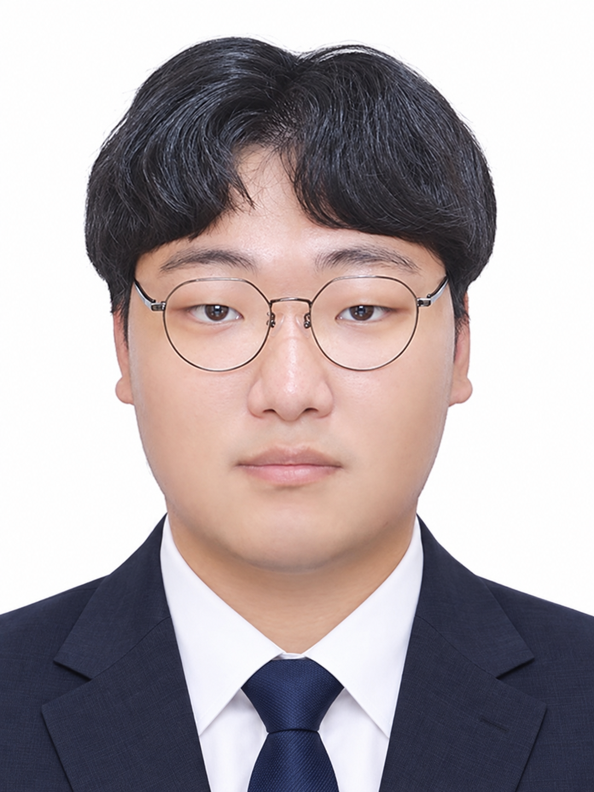

FIRMWARE · HARDWARE · ROBOTICS
신호를 읽고,
움직임을 만듭니다.
센서 입력부터 MCU 제어, 실제 하드웨어 동작까지.
직접 연결하고 검증하며 로봇 시스템을 구현합니다.
C · STM32 · FreeRTOS · UART · PWM
센서 배선 · 모터 제어 · 하드웨어 통합
프로젝트 06
프로젝트를 선택하면 상세 내용을 볼 수 있습니다.

01 / MAIN PROJECT
스마트팩토리
팀장 · PM · Jetson Nano 적재 창고
재료 공급부터 조립·운반·적재까지, 다중 로봇 공정을 기획하고 연결합니다.
상세 보기 →
02 / PROJECT
스마트 도서관 로봇
ESP32 · RFID · 하드웨어 · Android
책 정보를 읽는 RFID와 로봇 하드웨어, 사용자 앱을 연결했습니다.
상세 보기 →
03 / PROJECT
ARMIGO
하드웨어 · 모터 제어
손으로 가르친 로봇팔 자세를 저장하고 재생하는 4축 티칭 시스템입니다.
상세 보기 →
04 / PROJECT
세이프킥
하드웨어 · 펌웨어
음주·하중 센서 판정을 잠금과 모터 구동 제어로 연결했습니다.
상세 보기 →
05 / PROJECT
음주컷
하드웨어 설계 · 펌웨어
착석·호흡·음주 측정을 상태 머신으로 관리하는 시동 잠금 프로토타입입니다.
상세 보기 →
06 / MINI PROJECT
PLC 자동 적재
PLC 팀 미니 프로젝트
소재 종류와 위치를 기억하고 적재·출고 시퀀스를 제어합니다.
상세 보기 →